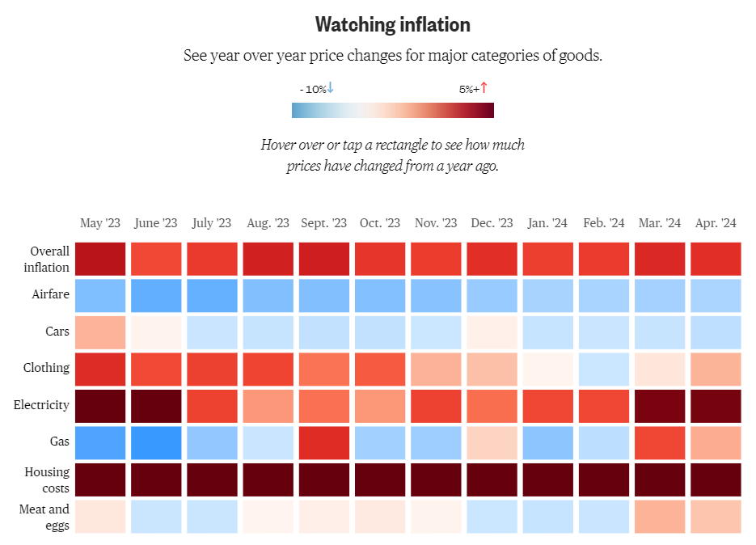
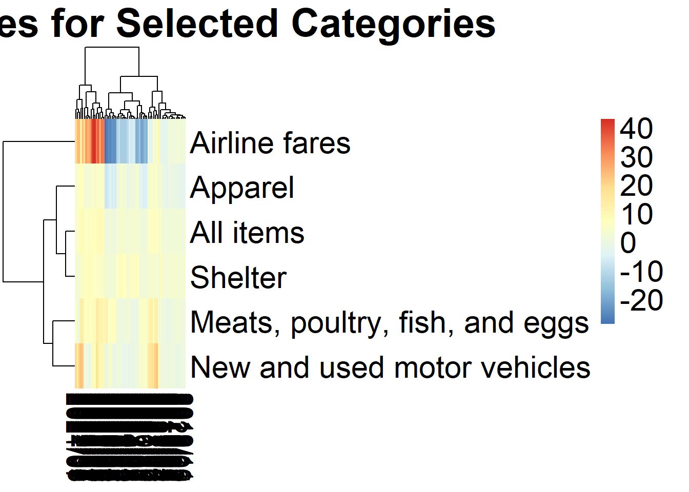
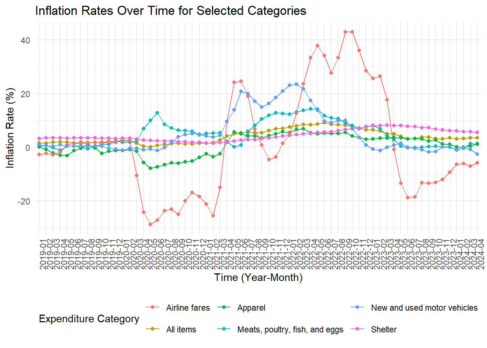

library(tidyverse)
library(knitr)
library(readxl)
library(purrr)
library(pheatmap)Visualising inflation in the USA (2019-2024)
Data preparation
Introduction
This document contains the data engineering required to reconstruct and improve the plot by @Joella_Carman and @Nigel_Chiwaya, shown in @NBC_News, depicting inflation year over year for major categories of goods (May 2023 to Apr 2024).
The code below requires the following packages:

Data Cleaning
@Joella_Carman and @Nigel_Chiwaya based their visualization data on Bureau of Labor Statistics and Energy Information Administration data, available in XLXS format with each row representing a major category of goods.
The data is separated into various XLXS files, one for each month. We will combine these files into a single data set, while also dropping columns that are not relevant for our analysis. We will also drop indent levels of 4 and above, as these are subcategories of the main categories we are interested in.
Relevant columns for data processing include: - Expenditure category: Category of goods - Unadjusted percent change: Inflation rate change year on year for the category
For our data processing purposes, we will only retain rows where Expenditure category is one of the following: - All items: Overall inflation - Airline fares: Airfare - New and used motor vehicles: Cars - Apparel: Clothing - Shelter: Housing costs - Meats, poultry, fish, and eggs: Meat and eggs
We will then pivot the data to a wide format, with each row representing a category of goods and each column representing the year and month of the inflation rate change year on year.
New names:
New names:
New names:
New names:
New names:
New names:
New names:
New names:
New names:
New names:
New names:
New names:
New names:
New names:
New names:
New names:
New names:
New names:
New names:
New names:
New names:
New names:
New names:
New names:
New names:
New names:
New names:
New names:
New names:
New names:
New names:
New names:
New names:
New names:
New names:
New names:
New names:
New names:
New names:
New names:
New names:
New names:
New names:
New names:
New names:
New names:
New names:
New names:
New names:
New names:
New names:
New names:
New names:
New names:
New names:
New names:
New names:
New names:
New names:
New names:
New names:
New names:
New names:
New names:
• `` -> `...1`
• `` -> `...2`
• `` -> `...3`
• `` -> `...4`
• `` -> `...5`
• `` -> `...6`
• `` -> `...7`
• `` -> `...8`[[1]]
# A tibble: 6 × 8
...1 ...2 ...3 ...4 ...5 ...6 ...7 ...8
<dbl> <chr> <dbl> <dbl> <dbl> <chr> <chr> <chr>
1 0 All items 100 1.6 NA – S-Jun. … 1.6
2 1 Food 13.3 1.6 0.215 – – –
3 2 Food at home 7.29 0.6 0.048 – – –
4 3 Cereals and bakery products 0.962 1 0.01 – S-Oct. … 0.5
5 4 Cereals and cereal products 0.308 -0.4 -0.001 – S-Nov. … -0.4
6 5 Flour and prepared flour mixes 0.039 -0.9 0 – S-Nov. … -1.4
[[2]]
# A tibble: 6 × 8
...1 ...2 ...3 ...4 ...5 ...6 ...7 ...8
<dbl> <chr> <dbl> <dbl> <dbl> <chr> <chr> <chr>
1 0 All items 100 1.5 NA – S-Sep. … 1.5
2 1 Food 13.4 2 0.261 – L-Apr. … 2.0
3 2 Food at home 7.32 1.2 0.088 – L-Apr. … 1.3
4 3 Cereals and bakery products 0.962 1.8 0.017 – L-Aug. … 1.8
5 4 Cereals and cereal products 0.307 0.2 0.001 – L-Dec. … 0.2
6 5 Flour and prepared flour mixes 0.041 -2.4 -0.001 – S-Jul. … -2.4
[[3]]
# A tibble: 6 × 8
...1 ...2 ...3 ...4 ...5 ...6 ...7 ...8
<dbl> <chr> <dbl> <dbl> <dbl> <chr> <chr> <chr>
1 0 All items 100 1.9 NA – L-Dec. … 1.9
2 1 Food 13.4 2.1 0.282 – L-Mar. … 2.3
3 2 Food at home 7.30 1.4 0.104 – L-Mar. … 1.9
4 3 Cereals and bakery products 0.962 1.8 0.017 – – –
5 4 Cereals and cereal products 0.308 1.9 0.006 – L-Jul. … 3.2
6 5 Flour and prepared flour mixes 0.04 -0.4 0 – L-Sep. … 1.8
[[4]]
# A tibble: 6 × 8
...1 ...2 ...3 ...4 ...5 ...6 ...7 ...8
<dbl> <chr> <dbl> <dbl> <dbl> <chr> <chr> <chr>
1 0 All items 100 2 NA – L-Nov. … 2.2
2 1 Food 13.3 1.8 0.236 – S-Jan. … 1.6
3 2 Food at home 7.28 0.7 0.053 – S-Jan. … 0.6
4 3 Cereals and bakery products 0.961 1.8 0.017 – – –
5 4 Cereals and cereal products 0.311 0.7 0.002 – S-Feb. … 0.2
6 5 Flour and prepared flour mixes 0.04 -1.9 -0.001 – S-Feb. … -2.4
[[5]]
# A tibble: 6 × 8
...1 ...2 ...3 ...4 ...5 ...6 ...7 ...8
<dbl> <chr> <dbl> <dbl> <dbl> <chr> <chr> <chr>
1 0 All items 100 1.8 NA – S-Feb. … 1.5
2 1 Food 13.2 2 0.262 – L-Mar. … 2.1
3 2 Food at home 7.22 1.2 0.087 – L-Mar. … 1.4
4 3 Cereals and bakery products 0.953 2.2 0.021 – L-Jul. … 2.9
5 4 Cereals and cereal products 0.307 0.6 0.002 – S-Feb. … 0.2
6 5 Flour and prepared flour mixes 0.04 -1.5 -0.001 – L-Mar. … -0.4
[[6]]
# A tibble: 6 × 8
...1 ...2 ...3 ...4 ...5 ...6 ...7 ...8
<dbl> <chr> <dbl> <dbl> <dbl> <chr> <chr> <chr>
1 0 All items 100 1.6 NA – S-Feb. … 1.5
2 1 Food 13.2 1.9 0.252 – S-Apr. … 1.8
3 2 Food at home 7.21 0.9 0.068 – S-Apr. … 0.7
4 3 Cereals and bakery products 0.955 1.2 0.011 – S-Jan. … 1.0
5 4 Cereals and cereal products 0.306 1 0.003 – L-Mar. … 1.9
6 5 Flour and prepared flour mixes 0.04 -1 0 – L-Mar. … -0.4
[[7]]
# A tibble: 6 × 8
...1 ...2 ...3 ...4 ...5 ...6 ...7 ...8
<dbl> <chr> <dbl> <dbl> <dbl> <chr> <chr> <chr>
1 0 All items 100 1.8 NA – L-May 2… 1.8
2 1 Food 13.2 1.8 0.236 – S-Apr. … 1.8
3 2 Food at home 7.19 0.6 0.047 – S-Jan. … 0.6
4 3 Cereals and bakery products 0.952 1.5 0.015 – L-May 2… 2.2
5 4 Cereals and cereal products 0.308 1.1 0.004 – L-Mar. … 1.9
6 5 Flour and prepared flour mixes 0.04 -0.3 0 – L-Sep. … 1.8
[[8]]
# A tibble: 6 × 8
...1 ...2 ...3 ...4 ...5 ...6 ...7 ...8
<dbl> <chr> <dbl> <dbl> <dbl> <chr> <chr> <chr>
1 0 All items 100 1.7 NA – S-Jun. … 1.6
2 1 Food 13.2 1.7 0.226 – S-Jan. … 1.6
3 2 Food at home 7.18 0.5 0.034 – S-Nov. … 0.4
4 3 Cereals and bakery products 0.953 1.2 0.011 – S-Jun. … 1.2
5 4 Cereals and cereal products 0.308 -0.1 0 – S-Jan. … -0.4
6 5 Flour and prepared flour mixes 0.04 -0.3 0 – – –
[[9]]
# A tibble: 6 × 8
...1 ...2 ...3 ...4 ...5 ...6 ...7 ...8
<dbl> <chr> <dbl> <dbl> <dbl> <chr> <chr> <chr>
1 0 All items 100 1.7 NA – – –
2 1 Food 13.2 1.8 0.237 – L-Jul. … 1.8
3 2 Food at home 7.17 0.6 0.043 – L-Jul. … 0.6
4 3 Cereals and bakery products 0.95 1.3 0.012 – L-Jul. … 1.5
5 4 Cereals and cereal products 0.305 -0.7 -0.002 – S-Oct. … -1.2
6 5 Flour and prepared flour mixes 0.04 -1.3 -0.001 – S-May 2… -1.5
[[10]]
# A tibble: 6 × 8
...1 ...2 ...3 ...4 ...5 ...6 ...7 ...8
<dbl> <chr> <dbl> <dbl> <dbl> <chr> <chr> <chr>
1 0 All items 100 1.8 NA – L-Jul. … 1.8
2 1 Food 13.2 2.1 0.274 – L-Mar. … 2.1
3 2 Food at home 7.18 1 0.074 – L-May 2… 1.2
4 3 Cereals and bakery products 0.951 1.5 0.015 – L-Jul. … 1.5
5 4 Cereals and cereal products 0.303 0.9 0.003 – L-Jul. … 1.10…
6 5 Flour and prepared flour mixes 0.04 0.6 0 – L-Sep. … 1.8
[[11]]
# A tibble: 6 × 8
...1 ...2 ...3 ...4 ...5 ...6 ...7 ...8
<dbl> <chr> <dbl> <dbl> <dbl> <chr> <chr> <chr>
1 0 All items 100 2.1 NA – L-Nov. … 2.2
2 1 Food 13.2 2 0.265 – S-Sep. … 1.8
3 2 Food at home 7.18 1 0.072 – – –
4 3 Cereals and bakery products 0.946 1.1 0.01 – S-Jan. … 1.0
5 4 Cereals and cereal products 0.301 0.3 0.001 – S-Sep. … -0.7
6 5 Flour and prepared flour mixes 0.039 -0.4 0 – S-Sep. … -1.3
[[12]]
# A tibble: 6 × 8
...1 ...2 ...3 ...4 ...5 ...6 ...7 ...8
<dbl> <chr> <dbl> <dbl> <dbl> <chr> <chr> <chr>
1 0 All items 100 2.3 NA – L-Oct. … 2.5
2 1 Food 13.2 1.8 0.241 – S-Sep. … 1.8
3 2 Food at home 7.17 0.7 0.053 – S-Sep. … 0.6
4 3 Cereals and bakery products 0.946 0.3 0.003 – S-Aug. … 0.3
5 4 Cereals and cereal products 0.3 -0.3 -0.001 – S-Sep. … -0.7
6 5 Flour and prepared flour mixes 0.038 -0.3 0 – L-Oct. … 0.6
[[13]]
# A tibble: 6 × 8
...1 ...2 ...3 ...4 ...5 ...6 ...7 ...8
<dbl> <chr> <dbl> <dbl> <dbl> <dbl> <chr> <chr>
1 0 All items 100 2.5 NA 0.08 L-Oct. … 2.5
2 1 Food 13.8 1.8 0.244 0.15 – –
3 2 Food at home 7.58 0.7 0.055 0.19 – –
4 3 Cereals and bakery products 0.984 0.3 0.003 0.44 – –
5 4 Cereals and cereal products 0.301 0.4 0.001 0.8 L-Oct. … 0.9
6 5 Flour and prepared flour mixes 0.04 -0.5 0 1.08 S-Sep. … -1.3
[[14]]
# A tibble: 6 × 8
...1 ...2 ...3 ...4 ...5 ...6 ...7 ...8
<dbl> <chr> <dbl> <dbl> <dbl> <dbl> <chr> <chr>
1 0 All items 100 2.3 NA 0.08 S-Dec. … 2.3
2 1 Food 13.8 1.8 0.246 0.15 – –
3 2 Food at home 7.59 0.8 0.064 0.19 L-Nov. … 1.0
4 3 Cereals and bakery products 0.983 0.2 0.002 0.44 S-May 2… -0.2
5 4 Cereals and cereal products 0.302 -0.3 -0.001 0.8 S-Dec. … -0.3
6 5 Flour and prepared flour mixes 0.042 -0.7 0 1.08 S-Sep. … -1.3
[[15]]
# A tibble: 6 × 8
...1 ...2 ...3 ...4 ...5 ...6 ...7 ...8
<dbl> <chr> <dbl> <dbl> <dbl> <dbl> <chr> <chr>
1 0 All items 100 1.5 NA 0.08 S-Feb. … 1.5
2 1 Food 13.8 1.9 0.263 0.15 L-Nov. … 2.0
3 2 Food at home 7.60 1.1 0.084 0.19 L-May 2… 1.2
4 3 Cereals and bakery products 0.983 0.1 0.002 0.44 S-May 2… -0.2
5 4 Cereals and cereal products 0.301 -1 -0.003 0.8 S-Oct. … -1.2
6 5 Flour and prepared flour mixes 0.042 -0.7 0 1.08 – –
[[16]]
# A tibble: 6 × 8
...1 ...2 ...3 ...4 ...5 ...6 ...7 ...8
<dbl> <chr> <dbl> <dbl> <dbl> <dbl> <chr> <chr>
1 0 All items 100 0.3 NA 0.08 S-Oct. … 0.2
2 1 Food 13.9 3.5 0.478 0.15 L-Feb. … 3.9
3 2 Food at home 7.65 4.1 0.31 0.19 L-Feb. … 4.5
4 3 Cereals and bakery products 0.989 3.1 0.031 0.44 L-May 2… 3.7
5 4 Cereals and cereal products 0.304 1.5 0.005 0.8 L-Mar. … 1.9
6 5 Flour and prepared flour mixes 0.042 1.3 0.001 1.08 L-Sep. … 1.8
[[17]]
# A tibble: 6 × 8
...1 ...2 ...3 ...4 ...5 ...6 ...7 ...8
<dbl> <chr> <dbl> <dbl> <dbl> <dbl> <chr> <chr>
1 0 All items 100 0.1 NA 0.08 S-Sep. … 0.0
2 1 Food 14.2 4 0.546 0.15 L-Jan. … 4.4
3 2 Food at home 7.91 4.8 0.368 0.19 L-Jan. … 5.3
4 3 Cereals and bakery products 1.02 2.6 0.026 0.44 S-Mar. … 0.1
5 4 Cereals and cereal products 0.312 3.2 0.01 0.8 L-Jul. … 3.2
6 5 Flour and prepared flour mixes 0.043 0.8 0 1.08 S-Mar. … -0.7
[[18]]
# A tibble: 6 × 8
...1 ...2 ...3 ...4 ...5 ...6 ...7 ...8
<dbl> <chr> <dbl> <dbl> <dbl> <dbl> <chr> <chr>
1 0 All items 100 0.6 NA 0.08 L-Mar. … 1.5
2 1 Food 14.3 4.5 0.619 0.15 L-Dec. … 4.7
3 2 Food at home 7.98 5.6 0.428 0.19 L-Dec. … 6.0
4 3 Cereals and bakery products 1.02 3.3 0.033 0.44 L-May 2… 3.7
5 4 Cereals and cereal products 0.316 3 0.009 0.8 S-Apr. … 1.5
6 5 Flour and prepared flour mixes 0.043 2.6 0.001 1.08 L-Oct. … 2.8
[[19]]
# A tibble: 6 × 8
...1 ...2 ...3 ...4 ...5 ...6 ...7 ...8
<dbl> <chr> <dbl> <dbl> <dbl> <dbl> <chr> <chr>
1 0 All items 100 1 NA 0.08 L-Mar. … 1.5
2 1 Food 14.3 4.1 0.559 0.15 S-May 2… 4.0
3 2 Food at home 7.97 4.6 0.351 0.19 S-Apr. … 4.1
4 3 Cereals and bakery products 1.02 2.8 0.028 0.44 S-May 2… 2.6
5 4 Cereals and cereal products 0.316 1.8 0.006 0.8 S-Apr. … 1.5
6 5 Flour and prepared flour mixes 0.044 1 0.001 1.08 S-May 2… 0.8
[[20]]
# A tibble: 6 × 8
...1 ...2 ...3 ...4 ...5 ...6 ...7 ...8
<dbl> <chr> <dbl> <dbl> <dbl> <dbl> <chr> <chr>
1 0 All items 100 1.3 NA 0.08 L-Mar. … 1.5
2 1 Food 14.1 4.1 0.564 0.15 – –
3 2 Food at home 7.85 4.6 0.351 0.19 – –
4 3 Cereals and bakery products 1.01 2.8 0.028 0.44 – –
5 4 Cereals and cereal products 0.312 1.7 0.005 0.8 S-Apr. … 1.5
6 5 Flour and prepared flour mixes 0.043 1.4 0.001 1.08 L-Jun. … 2.6
[[21]]
# A tibble: 6 × 8
...1 ...2 ...3 ...4 ...5 ...6 ...7 ...8
<dbl> <chr> <dbl> <dbl> <dbl> <dbl> <chr> <chr>
1 0 All items 100 1.4 NA 0.08 L-Mar. … 1.5
2 1 Food 14.1 3.9 0.54 0.15 S-Apr. … 3.5
3 2 Food at home 7.82 4.1 0.308 0.19 S-Apr. … 4.1
4 3 Cereals and bakery products 1.01 2.6 0.026 0.44 S-May 2… 2.6
5 4 Cereals and cereal products 0.308 2.6 0.008 0.8 L-Jun. … 3.0
6 5 Flour and prepared flour mixes 0.043 0.7 0 1.08 S-Mar. … -0.7
[[22]]
# A tibble: 6 × 8
...1 ...2 ...3 ...4 ...5 ...6 ...7 ...8
<dbl> <chr> <dbl> <dbl> <dbl> <dbl> <chr> <chr>
1 0 All items 100 1.2 NA 0.08 S-Jul. … 1.0
2 1 Food 14.1 3.9 0.539 0.15 – –
3 2 Food at home 7.78 4 0.301 0.19 S-Mar. … 1.1
4 3 Cereals and bakery products 1.00 3 0.03 0.44 L-Jun. … 3.3
5 4 Cereals and cereal products 0.308 2.8 0.008 0.8 L-Jun. … 3.0
6 5 Flour and prepared flour mixes 0.042 2.3 0.001 1.08 L-Jun. … 2.6
[[23]]
# A tibble: 6 × 8
...1 ...2 ...3 ...4 ...5 ...6 ...7 ...8
<dbl> <chr> <dbl> <dbl> <dbl> <dbl> <chr> <chr>
1 0 All items 100 1.2 NA 0.08 – –
2 1 Food 14.1 3.7 0.508 0.15 S-Apr. … 3.5
3 2 Food at home 7.80 3.6 0.272 0.19 S-Mar. … 1.1
4 3 Cereals and bakery products 1.00 2.4 0.024 0.44 S-Mar. … 0.1
5 4 Cereals and cereal products 0.307 2.7 0.008 0.8 S-Sep. … 2.6
6 5 Flour and prepared flour mixes 0.042 3.5 0.001 1.08 L-Aug. … 4.3
[[24]]
# A tibble: 6 × 8
...1 ...2 ...3 ...4 ...5 ...6 ...7 ...8
<dbl> <chr> <dbl> <dbl> <dbl> <dbl> <chr> <chr>
1 0 All items 100 1.4 NA 0.08 L-Sep. … 1.4
2 1 Food 14.1 3.9 0.541 0.15 L-Oct. … 3.9
3 2 Food at home 7.75 3.9 0.298 0.19 L-Oct. … 4.0
4 3 Cereals and bakery products 0.999 3.2 0.031 0.44 L-Jun. … 3.3
5 4 Cereals and cereal products 0.306 3.5 0.011 0.8 L-May 2… 4.0
6 5 Flour and prepared flour mixes 0.041 3.2 0.001 1.08 S-Oct. … 2.3
[[25]]
# A tibble: 6 × 8
...1 ...2 ...3 ...4 ...5 ...6 ...7 ...8
<dbl> <chr> <dbl> <dbl> <dbl> <dbl> <chr> <chr>
1 0 All items 100 1.4 NA 0.09 – –
2 1 Food 14.1 3.8 0.522 0.16 S-Nov. … 3.7
3 2 Food at home 7.77 3.7 0.281 0.24 S-Nov. … 3.6
4 3 Cereals and bakery products 1.00 2.5 0.025 0.52 S-Nov. … 2.4
5 4 Cereals and cereal products 0.308 2.6 0.008 0.79 S-Sep. … 2.6
6 5 Flour and prepared flour mixes 0.041 1.7 0.001 1.47 S-Sep. … 0.7
[[26]]
# A tibble: 6 × 8
...1 ...2 ...3 ...4 ...5 ...6 ...7 ...8
<dbl> <chr> <dbl> <dbl> <dbl> <dbl> <chr> <chr>
1 0 All items 100 1.7 NA 0.09 L-Feb. … 2.3
2 1 Food 14.1 3.6 0.499 0.16 S-Apr. … 3.5
3 2 Food at home 7.76 3.5 0.27 0.24 S-Mar. … 1.1
4 3 Cereals and bakery products 0.994 2.7 0.026 0.52 L-Dec. … 3.2
5 4 Cereals and cereal products 0.306 2.4 0.007 0.79 S-Aug. … 1.7
6 5 Flour and prepared flour mixes 0.042 1.9 0.001 1.47 L-Dec. … 3.2
[[27]]
# A tibble: 6 × 8
...1 ...2 ...3 ...4 ...5 ...6 ...7 ...8
<dbl> <chr> <dbl> <dbl> <dbl> <dbl> <chr> <chr>
1 0 All items 100 2.6 NA 0.09 L-Aug. … 2.7
2 1 Food 14.1 3.5 0.48 0.16 S-Apr. … 3.5
3 2 Food at home 7.74 3.3 0.252 0.24 S-Mar. … 1.1
4 3 Cereals and bakery products 0.993 2.6 0.025 0.52 S-Jan. … 2.5
5 4 Cereals and cereal products 0.303 1.9 0.006 0.79 S-Aug. … 1.7
6 5 Flour and prepared flour mixes 0.042 1.4 0.001 1.47 S-Sep. … 0.7
[[28]]
# A tibble: 6 × 8
...1 ...2 ...3 ...4 ...5 ...6 ...7 ...8
<dbl> <chr> <dbl> <dbl> <dbl> <dbl> <chr> <chr>
1 0 All items 100 4.2 NA 0.09 L-Sep. … 4.9
2 1 Food 14.0 2.4 0.336 0.16 S-Mar. … 1.9
3 2 Food at home 7.70 1.2 0.096 0.24 S-Mar. … 1.1
4 3 Cereals and bakery products 0.988 0.1 0.001 0.52 S-Mar. … 0.1
5 4 Cereals and cereal products 0.302 -0.5 -0.001 0.79 S-Mar. … -1.0
6 5 Flour and prepared flour mixes 0.041 -1.3 -0.001 1.47 S-Sep. … -1.3
[[29]]
# A tibble: 6 × 8
...1 ...2 ...3 ...4 ...5 ...6 ...7 ...8
<dbl> <chr> <dbl> <dbl> <dbl> <dbl> <chr> <chr>
1 0 All items 100 5 NA 0.09 L-Aug. … 5.4
2 1 Food 13.9 2.2 0.307 0.16 S-Mar. … 1.9
3 2 Food at home 7.69 0.7 0.053 0.24 S-Jan. … 0.7
4 3 Cereals and bakery products 0.982 0.6 0.006 0.52 L-Mar. … 2.6
5 4 Cereals and cereal products 0.298 -0.8 -0.002 0.79 S-Mar. … -1.0
6 5 Flour and prepared flour mixes 0.041 0.2 0 1.47 L-Mar. … 1.4
[[30]]
# A tibble: 6 × 8
...1 ...2 ...3 ...4 ...5 ...6 ...7 ...8
<dbl> <chr> <dbl> <dbl> <dbl> <dbl> <chr> <chr>
1 0 All items 100 5.4 NA 0.09 L-Aug. … 5.4
2 1 Food 13.9 2.4 0.34 0.16 L-Apr. … 2.4
3 2 Food at home 7.65 0.9 0.074 0.24 L-Apr. … 1.2
4 3 Cereals and bakery products 0.979 0.2 0.002 0.52 S-Apr. … 0.1
5 4 Cereals and cereal products 0.299 -0.9 -0.003 0.79 S-Mar. … -1.0
6 5 Flour and prepared flour mixes 0.041 -0.8 0 1.47 S-Apr. … -1.3
[[31]]
# A tibble: 6 × 8
...1 ...2 ...3 ...4 ...5 ...6 ...7 ...8
<dbl> <chr> <dbl> <dbl> <dbl> <dbl> <chr> <chr>
1 0 All items 100 5.4 NA 0.09 – –
2 1 Food 13.8 3.4 0.487 0.16 L-Mar. … 3.5
3 2 Food at home 7.63 2.6 0.201 0.24 L-Mar. … 3.3
4 3 Cereals and bakery products 0.97 1.5 0.015 0.52 L-Mar. … 2.6
5 4 Cereals and cereal products 0.298 0.7 0.002 0.79 L-Mar. … 1.9
6 5 Flour and prepared flour mixes 0.041 0.8 0 1.47 L-Mar. … 1.4
[[32]]
# A tibble: 6 × 8
...1 ...2 ...3 ...4 ...5 ...6 ...7 ...8
<dbl> <chr> <dbl> <dbl> <dbl> <dbl> <chr> <chr>
1 0 All items 100 5.3 NA 0.09 S-May 2… 5.0
2 1 Food 13.9 3.7 0.527 0.16 L-Jan. … 3.8
3 2 Food at home 7.64 3 0.232 0.24 L-Mar. … 3.3
4 3 Cereals and bakery products 0.975 1.6 0.016 0.52 L-Mar. … 2.6
5 4 Cereals and cereal products 0.298 1.7 0.005 0.79 L-Mar. … 1.9
6 5 Flour and prepared flour mixes 0.041 2.6 0.001 1.47 L-Dec. … 3.2
[[33]]
# A tibble: 6 × 8
...1 ...2 ...3 ...4 ...5 ...6 ...7 ...8
<dbl> <chr> <dbl> <dbl> <dbl> <dbl> <chr> <chr>
1 0 All items 100 5.4 NA 0.09 L-Jul. … 5.4
2 1 Food 13.9 4.6 0.646 0.16 L-Dec. … 4.7
3 2 Food at home 7.65 4.5 0.351 0.24 L-Aug. … 4.6
4 3 Cereals and bakery products 0.971 2.7 0.027 0.52 L-Feb. … 2.7
5 4 Cereals and cereal products 0.297 1.4 0.004 0.79 S-Jul. … 0.7
6 5 Flour and prepared flour mixes 0.042 4.1 0.002 1.47 L-Aug. … 4.3
[[34]]
# A tibble: 6 × 8
...1 ...2 ...3 ...4 ...5 ...6 ...7 ...8
<dbl> <chr> <dbl> <dbl> <dbl> <dbl> <chr> <chr>
1 0 All items 100 6.2 NA 0.09 L-Nov. … 6.3
2 1 Food 14.0 5.3 0.752 0.16 L-Jan. … 5.3
3 2 Food at home 7.72 5.4 0.419 0.24 L-Jun. … 5.6
4 3 Cereals and bakery products 0.979 3.5 0.035 0.52 L-May 2… 3.7
5 4 Cereals and cereal products 0.296 3.1 0.009 0.79 L-Dec. … 3.5
6 5 Flour and prepared flour mixes 0.042 5 0.002 1.47 L-Jul. … 5.0
[[35]]
# A tibble: 6 × 8
...1 ...2 ...3 ...4 ...5 ...6 ...7 ...8
<dbl> <chr> <dbl> <dbl> <dbl> <dbl> <chr> <chr>
1 0 All items 100 6.8 NA 0.09 L-Jun. … 7.1
2 1 Food 14.0 6.1 0.86 0.16 L-Oct. … 6.3
3 2 Food at home 7.73 6.4 0.495 0.24 L-Dec. … 6.6
4 3 Cereals and bakery products 0.979 4.6 0.046 0.52 L-Apr. … 4.7
5 4 Cereals and cereal products 0.298 4.4 0.013 0.79 L-Apr. … 5.0
6 5 Flour and prepared flour mixes 0.042 6.2 0.003 1.47 L-Jun. … 6.2
[[36]]
# A tibble: 6 × 8
...1 ...2 ...3 ...4 ...5 ...6 ...7 ...8
<dbl> <chr> <dbl> <dbl> <dbl> <dbl> <chr> <chr>
1 0 All items 100 7 NA 0.09 L-Jun. … 7.1
2 1 Food 14.0 6.3 0.886 0.16 L-Oct. … 6.3
3 2 Food at home 7.72 6.5 0.504 0.24 L-Dec. … 6.6
4 3 Cereals and bakery products 0.978 4.8 0.048 0.52 L-Feb. … 5.3
5 4 Cereals and cereal products 0.299 4.8 0.015 0.79 L-Apr. … 5
6 5 Flour and prepared flour mixes 0.041 6.6 0.003 1.47 L-Apr. … 9.4
[[37]]
# A tibble: 6 × 8
...1 ...2 ...3 ...4 ...5 ...6 ...7 ...8
<dbl> <chr> <dbl> <dbl> <dbl> <dbl> <chr> <chr>
1 0 All items 100 7.5 NA 0.09 L-Feb. … 7.6
2 1 Food 13.4 7 0.974 0.19 L-Aug. … 7.1
3 2 Food at home 8.16 7.4 0.578 0.29 L-Oct. … 7.5
4 3 Cereals and bakery products 1.03 6.8 0.069 0.54 L-Mar. … 7.4
5 4 Cereals and cereal products 0.332 6 0.019 0.79 L-Jan. … 6.3
6 5 Flour and prepared flour mixes 0.051 10.3 0.005 1.42 L-Dec. … 12.0
[[38]]
# A tibble: 6 × 8
...1 ...2 ...3 ...4 ...5 ...6 ...7 ...8
<dbl> <chr> <dbl> <dbl> <dbl> <dbl> <chr> <chr>
1 0 All items 100 7.9 NA 0.09 L-Jan. … 8.4
2 1 Food 13.4 7.9 1.10 0.19 L-Jul. … 8.4
3 2 Food at home 8.19 8.6 0.681 0.29 L-Apr. … 9.5
4 3 Cereals and bakery products 1.04 7.8 0.079 0.54 L-Feb. … 8.9
5 4 Cereals and cereal products 0.332 7.7 0.024 0.79 L-Nov. … 8.5
6 5 Flour and prepared flour mixes 0.054 11.6 0.006 1.42 L-Dec. … 12
[[39]]
# A tibble: 6 × 8
...1 ...2 ...3 ...4 ...5 ...6 ...7 ...8
<dbl> <chr> <dbl> <dbl> <dbl> <dbl> <chr> <chr>
1 0 All items 100 8.5 NA 0.09 L-Dec. … 8.9
2 1 Food 13.4 8.8 1.21 0.19 L-May 1… 8.9
3 2 Food at home 8.23 10 0.791 0.29 L-Mar. … 10.3
4 3 Cereals and bakery products 1.04 9.4 0.096 0.54 L-Jan. … 11.3
5 4 Cereals and cereal products 0.333 10.1 0.032 0.79 L-Jan. … 12.5
6 5 Flour and prepared flour mixes 0.054 14.2 0.007 1.42 L-Jan. … 17.4
[[40]]
# A tibble: 6 × 8
...1 ...2 ...3 ...4 ...5 ...6 ...7 ...8
<dbl> <chr> <dbl> <dbl> <dbl> <dbl> <chr> <chr>
1 0 All items 100 8.3 NA 0.09 S-Feb. … 7.9
2 1 Food 13.4 9.4 1.28 0.19 L-Apr. … 9.5
3 2 Food at home 8.24 10.8 0.851 0.29 L-Nov. … 11.1
4 3 Cereals and bakery products 1.05 10.3 0.104 0.54 L-Jan. … 11.3
5 4 Cereals and cereal products 0.337 11.9 0.038 0.79 L-Jan. … 12.5
6 5 Flour and prepared flour mixes 0.054 14 0.007 1.42 S-Feb. … 11.6
[[41]]
# A tibble: 6 × 8
...1 ...2 ...3 ...4 ...5 ...6 ...7 ...8
<dbl> <chr> <dbl> <dbl> <dbl> <dbl> <chr> <chr>
1 0 All items 100 8.6 NA 0.09 L-Dec. … 8.9
2 1 Food 13.4 10.1 1.37 0.19 L-Mar. … 10.1
3 2 Food at home 8.30 11.9 0.942 0.29 L-Apr. … 12.3
4 3 Cereals and bakery products 1.05 11.6 0.118 0.54 L-Dec. … 11.7
5 4 Cereals and cereal products 0.339 12.8 0.041 0.79 L-Dec. … 13.1
6 5 Flour and prepared flour mixes 0.053 13.7 0.007 1.42 S-Feb. … 11.6
[[42]]
# A tibble: 6 × 8
...1 ...2 ...3 ...4 ...5 ...6 ...7 ...8
<dbl> <chr> <dbl> <dbl> <dbl> <dbl> <chr> <chr>
1 0 All items 100 9.1 NA 0.09 L-Nov. … 9.6
2 1 Food 13.4 10.4 1.40 0.19 L-Feb. … 10.5
3 2 Food at home 8.32 12.2 0.969 0.29 L-Apr. … 12.3
4 3 Cereals and bakery products 1.06 13.8 0.139 0.54 L-May 1… 14.0
5 4 Cereals and cereal products 0.342 15.1 0.048 0.79 L-Aug. … 15.1
6 5 Flour and prepared flour mixes 0.054 19.2 0.01 1.42 L-Dec. … 21.0
[[43]]
# A tibble: 6 × 8
...1 ...2 ...3 ...4 ...5 ...6 ...7 ...8
<dbl> <chr> <dbl> <dbl> <dbl> <dbl> <chr> <chr>
1 0 All items 100 8.5 NA 0.09 S-Apr. … 8.3
2 1 Food 13.4 10.9 1.47 0.19 L-May 1… 11.4
3 2 Food at home 8.30 13.1 1.04 0.29 L-Mar. … 13.6
4 3 Cereals and bakery products 1.06 15 0.152 0.54 L-Apr. … 17.1
5 4 Cereals and cereal products 0.346 16.8 0.054 0.79 L-EVER –
6 5 Flour and prepared flour mixes 0.056 22.7 0.012 1.42 L-EVER –
[[44]]
# A tibble: 6 × 8
...1 ...2 ...3 ...4 ...5 ...6 ...7 ...8
<dbl> <chr> <dbl> <dbl> <dbl> <dbl> <chr> <chr>
1 0 All items 100 8.3 NA 0.09 S-Apr. … 8.3
2 1 Food 13.5 11.4 1.52 0.19 L-May 1… 11.4
3 2 Food at home 8.41 13.5 1.08 0.29 L-Mar. … 13.6
4 3 Cereals and bakery products 1.09 16.4 0.166 0.54 L-Apr. … 17.1
5 4 Cereals and cereal products 0.353 17.4 0.056 0.79 L-EVER –
6 5 Flour and prepared flour mixes 0.058 23.3 0.012 1.42 L-EVER –
[[45]]
# A tibble: 6 × 8
...1 ...2 ...3 ...4 ...5 ...6 ...7 ...8
<dbl> <chr> <dbl> <dbl> <dbl> <dbl> <chr> <chr>
1 0 All items 100 8.2 NA 0.09 S-Feb. … 7.9
2 1 Food 13.6 11.2 1.51 0.19 S-Jul. … 10.9
3 2 Food at home 8.48 13 1.05 0.29 S-Jun. … 12.2
4 3 Cereals and bakery products 1.10 16.2 0.166 0.54 S-Jul. … 15.0
5 4 Cereals and cereal products 0.355 17.7 0.057 0.79 L-EVER –
6 5 Flour and prepared flour mixes 0.059 24.2 0.013 1.42 L-EVER –
[[46]]
# A tibble: 6 × 8
...1 ...2 ...3 ...4 ...5 ...6 ...7 ...8
<dbl> <chr> <dbl> <dbl> <dbl> <dbl> <chr> <chr>
1 0 All items 100 7.7 NA 0.09 S-Jan. … 7.5
2 1 Food 13.7 10.9 1.47 0.19 S-Jul. … 10.9
3 2 Food at home 8.51 12.4 1.01 0.29 S-Jun. … 12.2
4 3 Cereals and bakery products 1.10 15.9 0.163 0.54 S-Jul. … 15
5 4 Cereals and cereal products 0.355 16.9 0.055 0.79 S-Jul. … 16.8
6 5 Flour and prepared flour mixes 0.06 24.6 0.013 1.42 L-EVER –
[[47]]
# A tibble: 6 × 8
...1 ...2 ...3 ...4 ...5 ...6 ...7 ...8
<dbl> <chr> <dbl> <dbl> <dbl> <dbl> <chr> <chr>
1 0 All items 100 7.1 NA 0.09 S-Dec. … 7
2 1 Food 13.7 10.6 1.42 0.19 S-Jun. … 10.4
3 2 Food at home 8.52 12 0.975 0.29 S-May 2… 11.9
4 3 Cereals and bakery products 1.11 16.4 0.168 0.54 L-Aug. … 16.3…
5 4 Cereals and cereal products 0.356 16.6 0.054 0.79 S-Jun. … 15.1
6 5 Flour and prepared flour mixes 0.06 24.9 0.013 1.42 L-EVER –
[[48]]
# A tibble: 6 × 8
...1 ...2 ...3 ...4 ...5 ...6 ...7 ...8
<dbl> <chr> <dbl> <dbl> <dbl> <dbl> <chr> <chr>
1 0 All items 100 6.5 NA 0.09 S-Oct. … 6.2
2 1 Food 13.8 10.4 1.39 0.19 S-Jun. … 10.4
3 2 Food at home 8.52 11.8 0.962 0.29 S-Apr. … 10.8
4 3 Cereals and bakery products 1.12 16.1 0.166 0.54 S-Oct. … 15.9
5 4 Cereals and cereal products 0.358 15.6 0.052 0.79 S-Jun. … 15.1
6 5 Flour and prepared flour mixes 0.059 23.4 0.012 1.42 S-Aug. … 23.3
[[49]]
# A tibble: 6 × 8
...1 ...2 ...3 ...4 ...5 ...6 ...7 ...8
<dbl> <chr> <dbl> <dbl> <dbl> <dbl> <chr> <chr>
1 0 All items 100 6.4 NA 0.12 S-Oct. … 6.2
2 1 Food 13.5 10.1 1.35 0.19 S-May 2… 10.1
3 2 Food at home 8.73 11.3 0.931 0.26 S-Apr. … 10.8
4 3 Cereals and bakery products 1.16 15.6 0.162 0.54 S-Jul. … 15
5 4 Cereals and cereal products 0.365 15.9 0.053 0.87 L-Nov. … 16.6…
6 5 Flour and prepared flour mixes 0.06 20.4 0.011 2.29 S-Jun. … 19.2
[[50]]
# A tibble: 6 × 8
...1 ...2 ...3 ...4 ...5 ...6 ...7 ...8
<dbl> <chr> <dbl> <dbl> <dbl> <dbl> <chr> <chr>
1 0 All items 100 6 NA 0.12 S-Sep. … 5.4
2 1 Food 13.5 9.5 1.27 0.19 S-Apr. … 9.4
3 2 Food at home 8.73 10.2 0.839 0.26 S-Mar. … 10
4 3 Cereals and bakery products 1.17 14.6 0.153 0.54 S-Jun. … 13.8
5 4 Cereals and cereal products 0.367 14.2 0.047 0.87 S-May 2… 12.8
6 5 Flour and prepared flour mixes 0.062 19.8 0.011 2.29 S-Jun. … 19.2
[[51]]
# A tibble: 6 × 8
...1 ...2 ...3 ...4 ...5 ...6 ...7 ...8
<dbl> <chr> <dbl> <dbl> <dbl> <dbl> <chr> <chr>
1 0 All items 100 5 NA 0.12 S-May 2… 5
2 1 Food 13.5 8.5 1.13 0.19 S-Feb. … 7.9
3 2 Food at home 8.71 8.4 0.691 0.26 S-Jan. … 7.4
4 3 Cereals and bakery products 1.17 13.6 0.143 0.54 S-May 2… 11.6
5 4 Cereals and cereal products 0.364 12.8 0.043 0.87 S-May 2… 12.8
6 5 Flour and prepared flour mixes 0.061 17.5 0.01 2.29 S-May 2… 13.7
[[52]]
# A tibble: 6 × 8
...1 ...2 ...3 ...4 ...5 ...6 ...7 ...8
<dbl> <chr> <dbl> <dbl> <dbl> <dbl> <chr> <chr>
1 0 All items 100 4.9 NA 0.12 S-Apr. … 4.2
2 1 Food 13.5 7.7 1.02 0.19 S-Jan. … 7
3 2 Food at home 8.66 7.1 0.595 0.26 S-Dec. … 6.5
4 3 Cereals and bakery products 1.17 12.4 0.131 0.54 S-May 2… 11.6
5 4 Cereals and cereal products 0.368 11.3 0.039 0.87 S-Mar. … 10.1
6 5 Flour and prepared flour mixes 0.062 17.8 0.01 2.29 L-Feb. … 19.8
[[53]]
# A tibble: 6 × 8
...1 ...2 ...3 ...4 ...5 ...6 ...7 ...8
<dbl> <chr> <dbl> <dbl> <dbl> <dbl> <chr> <chr>
1 0 All items 100 4 NA 0.12 S-Mar. … 2.6
2 1 Food 13.4 6.7 0.892 0.19 S-Dec. … 6.3
3 2 Food at home 8.63 5.8 0.484 0.26 S-Oct. … 5.4
4 3 Cereals and bakery products 1.17 10.7 0.114 0.54 S-Apr. … 10.3
5 4 Cereals and cereal products 0.365 9.3 0.032 0.87 S-Feb. … 7.7
6 5 Flour and prepared flour mixes 0.061 17.1 0.009 2.29 S-May 2… 13.7
[[54]]
# A tibble: 6 × 8
...1 ...2 ...3 ...4 ...5 ...6 ...7 ...8
<dbl> <chr> <dbl> <dbl> <dbl> <dbl> <chr> <chr>
1 0 All items 100 3 NA 0.12 S-Mar. … 2.6
2 1 Food 13.4 5.7 0.762 0.19 S-Oct. … 5.3
3 2 Food at home 8.62 4.7 0.388 0.26 S-Sep. … 4.5
4 3 Cereals and bakery products 1.17 8.8 0.095 0.54 S-Feb. … 7.8
5 4 Cereals and cereal products 0.364 7.3 0.026 0.87 S-Jan. … 6
6 5 Flour and prepared flour mixes 0.061 12.1 0.007 2.29 S-Feb. … 11.6
[[55]]
# A tibble: 6 × 8
...1 ...2 ...3 ...4 ...5 ...6 ...7 ...8
<dbl> <chr> <dbl> <dbl> <dbl> <dbl> <chr> <chr>
1 0 All items 100 3.2 NA 0.12 L-May 2… 4
2 1 Food 13.4 4.9 0.65 0.19 S-Sep. … 4.59…
3 2 Food at home 8.58 3.6 0.303 0.26 S-Aug. … 3
4 3 Cereals and bakery products 1.17 7 0.078 0.54 S-Jan. … 6.8
5 4 Cereals and cereal products 0.365 5.8 0.021 0.87 S-Dec. … 4.8
6 5 Flour and prepared flour mixes 0.062 8.5 0.005 2.29 S-Dec. … 6.6
[[56]]
# A tibble: 6 × 8
...1 ...2 ...3 ...4 ...5 ...6 ...7 ...8
<dbl> <chr> <dbl> <dbl> <dbl> <dbl> <chr> <chr>
1 0 All items 100 3.7 NA 0.12 L-May 2… 4
2 1 Food 13.4 4.3 0.572 0.19 S-Aug. … 3.7
3 2 Food at home 8.60 3 0.253 0.26 S-Aug. … 3
4 3 Cereals and bakery products 1.17 6 0.067 0.54 S-Dec. … 4.8
5 4 Cereals and cereal products 0.367 4.3 0.016 0.87 S-Oct. … 3.1
6 5 Flour and prepared flour mixes 0.062 5.6 0.003 2.29 S-Oct. … 5
[[57]]
# A tibble: 6 × 8
...1 ...2 ...3 ...4 ...5 ...6 ...7 ...8
<dbl> <chr> <dbl> <dbl> <dbl> <dbl> <chr> <chr>
1 0 All items 100 3.7 NA 0.12 – –
2 1 Food 13.4 3.7 0.498 0.19 S-Aug. … 3.7
3 2 Food at home 8.57 2.4 0.208 0.26 S-Jun. … 0.9
4 3 Cereals and bakery products 1.16 4.8 0.054 0.54 S-Dec. … 4.8
5 4 Cereals and cereal products 0.362 3.6 0.013 0.87 S-Oct. … 3.1
6 5 Flour and prepared flour mixes 0.061 3.9 0.002 2.29 S-Aug. … 2.6
[[58]]
# A tibble: 6 × 8
...1 ...2 ...3 ...4 ...5 ...6 ...7 ...8
<dbl> <chr> <dbl> <dbl> <dbl> <dbl> <chr> <chr>
1 0 All items 100 3.2 NA 0.12 S-Jul. … 3.2
2 1 Food 13.4 3.3 0.444 0.19 S-Jun. … 2.4
3 2 Food at home 8.55 2.1 0.185 0.26 S-Jun. … 0.9
4 3 Cereals and bakery products 1.16 4.2 0.048 0.54 S-Oct. … 3.5
5 4 Cereals and cereal products 0.36 2.5 0.009 0.87 S-Sep. … 1.4
6 5 Flour and prepared flour mixes 0.061 3.2 0.002 2.29 S-Aug. … 2.6
[[59]]
# A tibble: 6 × 8
...1 ...2 ...3 ...4 ...5 ...6 ...7 ...8
<dbl> <chr> <dbl> <dbl> <dbl> <dbl> <chr> <chr>
1 0 All items 100 3.1 NA 0.12 S-Jun. … 3
2 1 Food 13.4 2.9 0.398 0.19 S-Jun. … 2.4
3 2 Food at home 8.58 1.7 0.143 0.26 S-Jun. … 0.9
4 3 Cereals and bakery products 1.16 3.4 0.04 0.54 S-Sep. … 2.7
5 4 Cereals and cereal products 0.358 2 0.007 0.87 S-Sep. … 1.4
6 5 Flour and prepared flour mixes 0.061 3.1 0.002 2.29 S-Aug. … 2.6
[[60]]
# A tibble: 6 × 8
...1 ...2 ...3 ...4 ...5 ...6 ...7 ...8
<dbl> <chr> <dbl> <dbl> <dbl> <dbl> <chr> <chr>
1 0 All items 100 3.4 NA 0.12 L-Sep. … 3.7
2 1 Food 13.4 2.7 0.366 0.19 S-Jun. … 2.4
3 2 Food at home 8.55 1.3 0.114 0.26 S-Jun. … 0.9
4 3 Cereals and bakery products 1.16 2.6 0.03 0.54 S-Aug. … 1.6
5 4 Cereals and cereal products 0.359 0.4 0.001 0.87 S-Jun. … -0.9
6 5 Flour and prepared flour mixes 0.06 2.2 0.001 2.29 S-Jul. … 0.8
[[61]]
# A tibble: 6 × 8
...1 ...2 ...3 ...4 ...5 ...6 ...7 ...8
<dbl> <chr> <dbl> <dbl> <dbl> <dbl> <chr> <chr>
1 0 All items 100 3.1 NA 0.1 S-Nov. … 3.1
2 1 Food 13.6 2.6 0.348 0.25 S-Jun. … 2.4
3 2 Food at home 8.17 1.2 0.102 0.21 S-Jun. … 0.9
4 3 Cereals and bakery products 1.07 1.5 0.017 0.43 S-Jul. … 1.5
5 4 Cereals and cereal products 0.314 -0.6 -0.002 0.82 S-Jun. … -0.9
6 5 Flour and prepared flour mixes 0.051 1 0 1.61 S-Jul. … 0.8
[[62]]
# A tibble: 6 × 8
...1 ...2 ...3 ...4 ...5 ...6 ...7 ...8
<dbl> <chr> <dbl> <dbl> <dbl> <dbl> <chr> <chr>
1 0 All items 100 3.2 NA 0.1 L-Dec. … 3.4
2 1 Food 13.6 2.2 0.303 0.25 S-May 2… 2.20…
3 2 Food at home 8.18 1 0.083 0.21 S-Jun. … 0.9
4 3 Cereals and bakery products 1.06 1.7 0.019 0.43 L-Dec. … 2.6
5 4 Cereals and cereal products 0.313 0.7 0.002 0.82 L-Nov. … 2
6 5 Flour and prepared flour mixes 0.052 0.6 0 1.61 S-Jun. … -0.8
[[63]]
# A tibble: 6 × 8
...1 ...2 ...3 ...4 ...5 ...6 ...7 ...8
<dbl> <chr> <dbl> <dbl> <dbl> <dbl> <chr> <chr>
1 0 All items 100 3.5 NA 0.1 L-Sep. … 3.7
2 1 Food 13.5 2.2 0.302 0.25 – –
3 2 Food at home 8.14 1.2 0.098 0.21 L-Jan. … 1.2
4 3 Cereals and bakery products 1.06 0.2 0.002 0.43 S-Jun. … 0.2
5 4 Cereals and cereal products 0.314 -1.3 -0.005 0.82 S-Feb. … -1.3
6 5 Flour and prepared flour mixes 0.052 -0.2 0 1.61 S-Jun. … -0.8
[[64]]
# A tibble: 6 × 8
...1 ...2 ...3 ...4 ...5 ...6 ...7 ...8
<dbl> <chr> <dbl> <dbl> <dbl> <dbl> <chr> <chr>
1 0 All items 100 3.4 NA 0.1 S-Feb. … 3.2
2 1 Food 13.4 2.2 0.298 0.25 – –
3 2 Food at home 8.09 1.1 0.093 0.21 S-Feb. … 1
4 3 Cereals and bakery products 1.05 0.6 0.006 0.43 L-Feb. … 1.7
5 4 Cereals and cereal products 0.31 0.6 0.001 0.82 L-Feb. … 0.7
6 5 Flour and prepared flour mixes 0.051 2.5 0.001 1.61 L-Nov. … 3.1 New names:
New names:
New names:
New names:
New names:
New names:
New names:
New names:
New names:
New names:
New names:
New names:
New names:
New names:
New names:
New names:
New names:
New names:
New names:
New names:
New names:
New names:
New names:
New names:
New names:
New names:
New names:
New names:
New names:
New names:
New names:
New names:
New names:
New names:
New names:
New names:
New names:
New names:
New names:
New names:
New names:
New names:
New names:
New names:
New names:
New names:
New names:
New names:
New names:
New names:
New names:
New names:
New names:
New names:
New names:
New names:
New names:
New names:
New names:
New names:
New names:
New names:
New names:
New names:
• `` -> `...1`
• `` -> `...2`
• `` -> `...3`
• `` -> `...4`
• `` -> `...5`
• `` -> `...6`
• `` -> `...7`
• `` -> `...8`[1] "filtered data:"[1] "wide data"# Read in the wide data
wide_data <- read_csv("data/merged/filtered_wide_inflation_data.csv")Rows: 6 Columns: 65
── Column specification ────────────────────────────────────────────────────────
Delimiter: ","
chr (1): expenditure_category
dbl (64): 2019/01, 2019/02, 2019/03, 2019/04, 2019/05, 2019/06, 2019/07, 201...
ℹ Use `spec()` to retrieve the full column specification for this data.
ℹ Specify the column types or set `show_col_types = FALSE` to quiet this message.# Convert the data to a matrix format for pheatmap
inflation_matrix <- as.matrix(wide_data[, -1]) # Remove the first column (expenditure_category)
rownames(inflation_matrix) <- wide_data$expenditure_category
# Plot the heatmap
pheatmap(inflation_matrix,
cluster_rows = TRUE,
cluster_cols = TRUE,
show_rownames = TRUE,
show_colnames = TRUE,
main = "Inflation Rates for Selected Categories",
fontsize_row = 10,
fontsize_col = 8,
cex = 1.5)
For the next step, we will merge the data with the data on electricity and gas prices, which are not included in the original data set. We will then calculate the average inflation rate for each category over the year.
# tmr ba..# Read in the processed wide data
wide_data <- read_csv("data/merged/filtered_wide_inflation_data.csv")Rows: 6 Columns: 65
── Column specification ────────────────────────────────────────────────────────
Delimiter: ","
chr (1): expenditure_category
dbl (64): 2019/01, 2019/02, 2019/03, 2019/04, 2019/05, 2019/06, 2019/07, 201...
ℹ Use `spec()` to retrieve the full column specification for this data.
ℹ Specify the column types or set `show_col_types = FALSE` to quiet this message.# Pivot the data back to long format for plotting
long_data <- wide_data %>%
pivot_longer(
cols = starts_with("20"),
names_to = "year_month",
values_to = "percent_change"
) %>%
separate(year_month, into = c("year", "month"), sep = "/") %>%
mutate(year_month = paste(year, month, sep = "-")) %>%
arrange(year, month)
# Plot the data
ggplot(long_data, aes(x = year_month, y = percent_change, color = expenditure_category, group = expenditure_category)) +
geom_line() +
geom_point() +
labs(
title = "Inflation Rates Over Time for Selected Categories",
x = "Time (Year-Month)",
y = "Inflation Rate (%)",
color = "Expenditure Category"
) +
theme_minimal() +
theme(
axis.text.x = element_text(angle = 90, hjust = 1),
legend.position = "bottom"
)